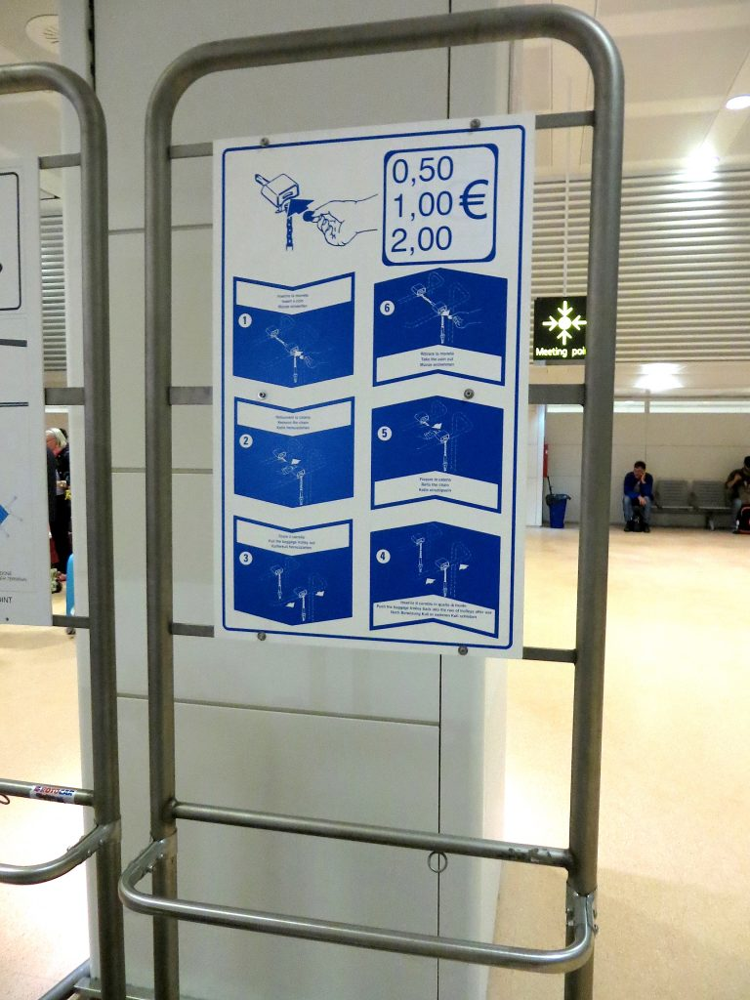
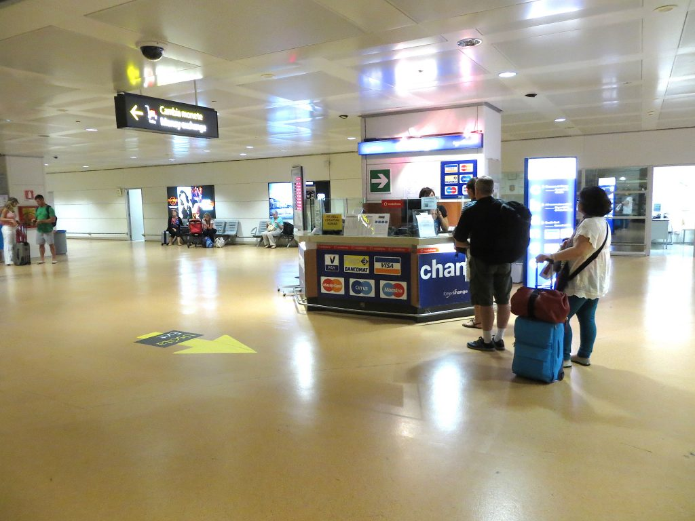
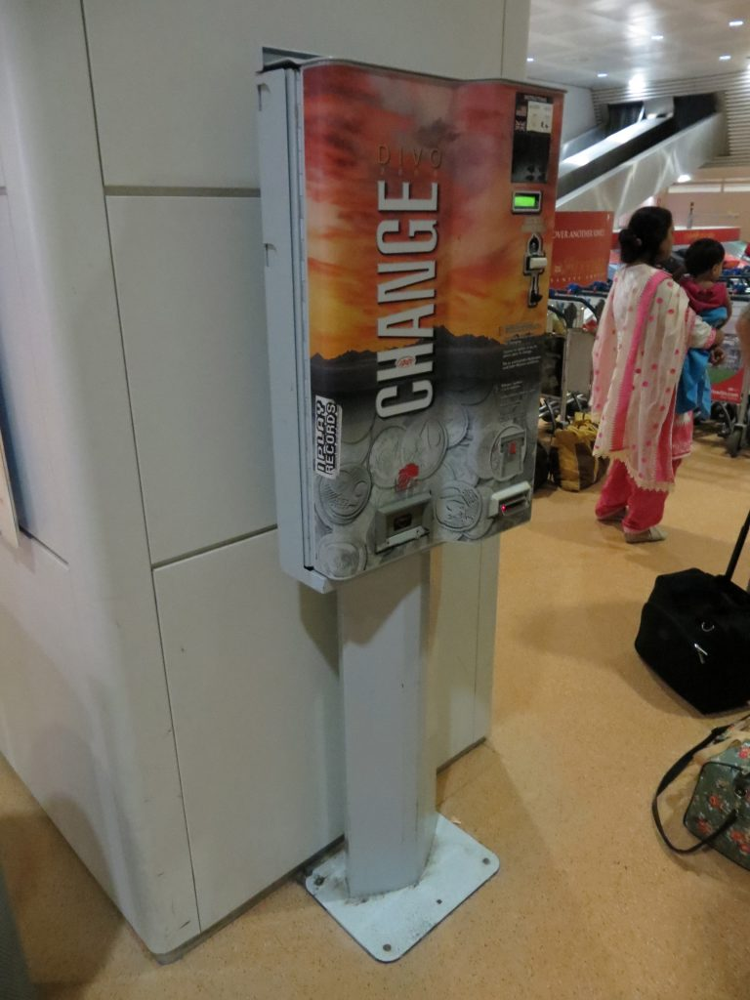
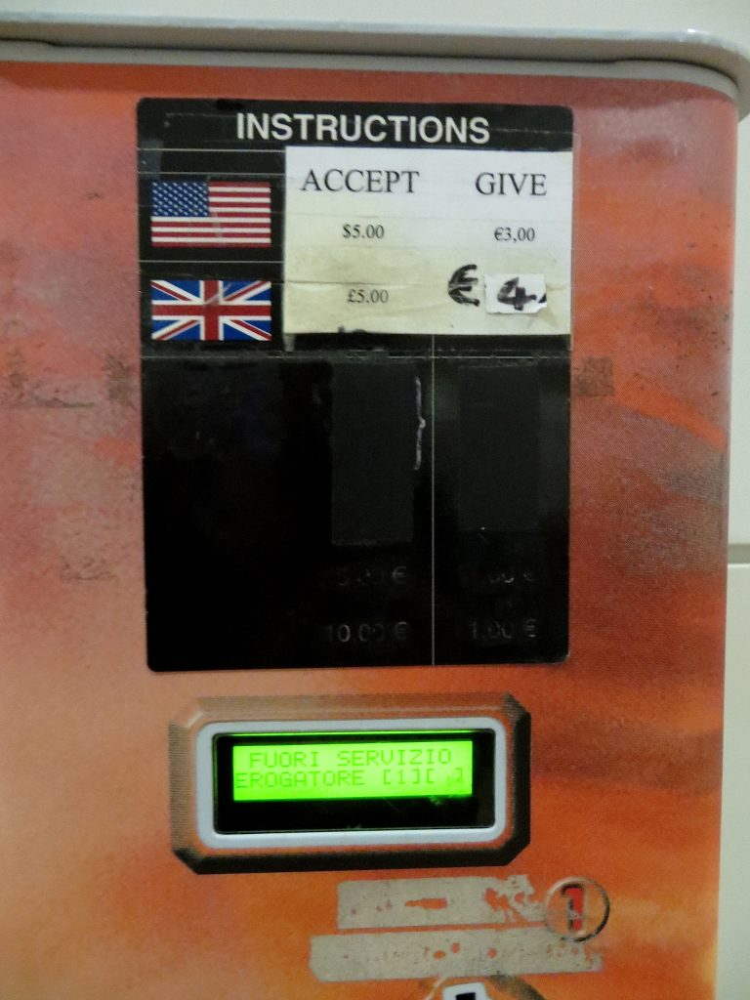
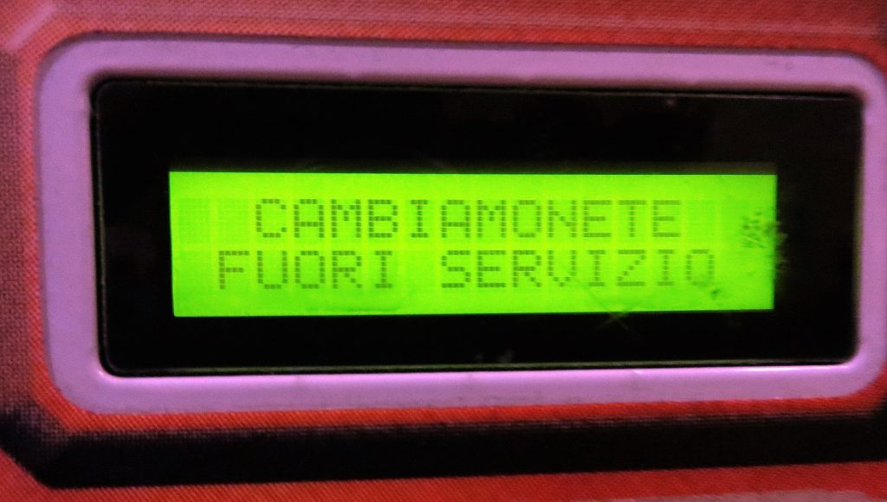
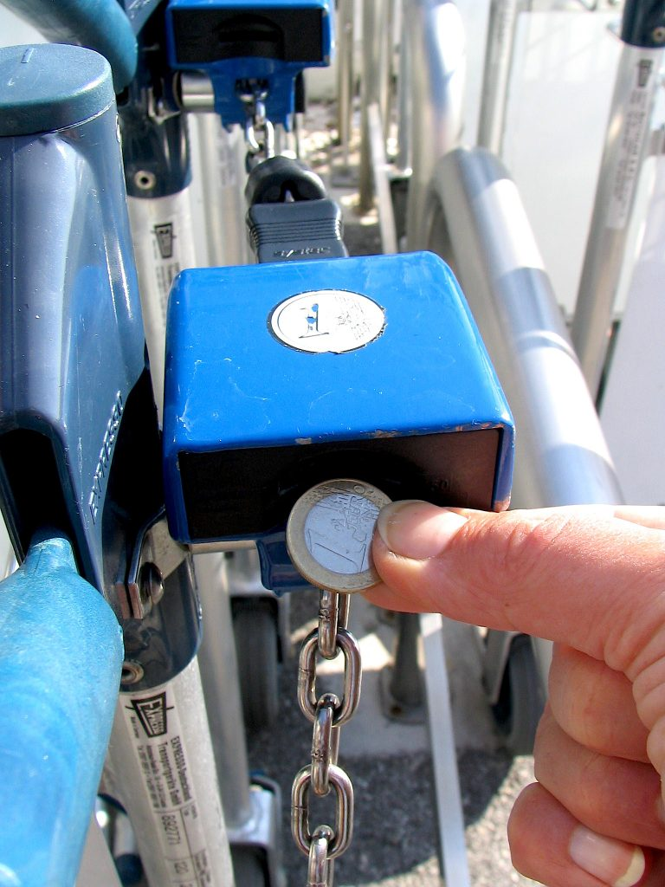

Instructions to unlock the luggage cart
In many airports, luggage carts (carrelli) are free to use, but others require a deposit of €1 to unlock the cart from the rack. If this is your first trip to Italy, you may find it convenient to have a few spare coins (monete) available ahead of time. You could inquire about Euro coins at your local bank or maybe try asking for a couple of spare Euros from friends who have recently come back from Europe. Having not only some change but also a bit of Euro cash with you can save you the time and hassle of looking for an exchange office right away. Fortunately, things have improved in recent years. At the Malpensa airport, for example, luggage carts accept US quarters while exchange offices have been installed within the airports' baggage claim areas. This is the one in Venice, where we usually land coming from the States:
Currency exchange at the Venice airport
Along with exchange offices, now you can also find exchange machines to obtain your Euro coins. This one, located in the Venice airport, accepts British and US currency:
Exchange machine at the airport

Front panel of an exchange machine
The machine gives out €3 when you insert a $5 bill (or €4 when you insert a £5 bill). Warning: Check the little green window before making any transaction, because – like in this case – the machine could be out of order (fuori servizio).
Fuori servizio message
So, now you have your Euro coins and you are ready to leave with your luggage.
Unlocking a luggage cart with a 1 Euro coin
{This is an excerpt from chapter 1 “Transportation” of the eBook “Italy from the Inside. A native Italian reveals the secrets of traveling in Italy”. Buy our eBook on Amazon and leave us a review! If it’s good, you’ll make us happy, if it’s bad, you’ll make us improve. Thank you either way!}